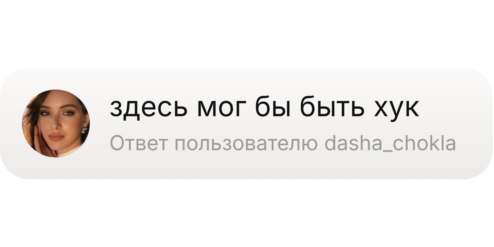
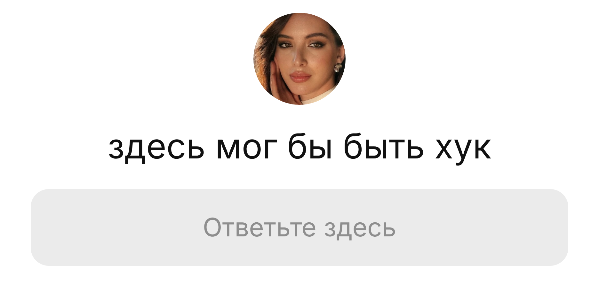
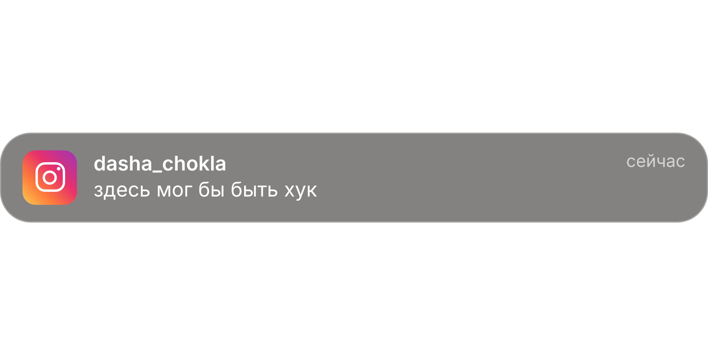
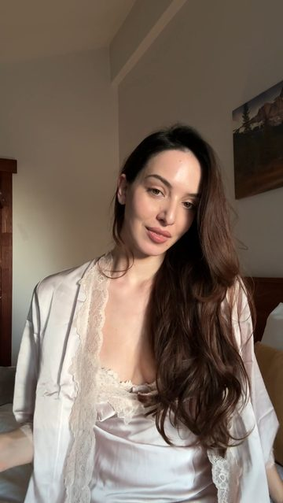
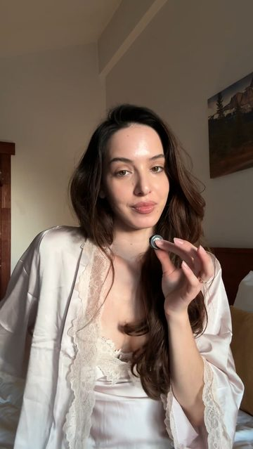

Syntx AI
Открой сервис в Telegram и выбери инструменты под свою задумку.
Открыть Syntx AIОт подготовки референсов до готовых шотов: внутри пошаговая инструкция, примеры и промпты для трёх вариантов эффекта.
AI-сервисы, которые использованы в этом гайде.
Открой сервис в Telegram и выбери инструменты под свою задумку.
Открыть Syntx AIПерейди на платформу и посмотри инструменты для генерации контента.
Открыть CoremindГенерируются один раз, дальше все три видео используют их.
Прикрепи своё фото. Формат широкий 16:9: так в одну картинку влезают три ракурса, и лицо, волосы и одежда не плывут между шотами.
Character reference sheet: three photos side by side in one wide 16:9 image, separated by thin white gaps, on a plain seamless medium-grey studio background. Soft, even studio lighting, photorealistic, natural skin texture, sharp focus. Use the woman from the attached photo: exact face, facial features, skin tone and body, 100% likeness. Panel 1 (left): full body, front view. She stands straight, arms relaxed at her sides, looking at the camera with a calm, neutral expression. Panel 2 (middle): full body, back view, same pose, showing her long hair from behind. Panel 3 (right): close-up portrait from the chest up, front view, slight soft smile, looking straight into the camera. The same woman in all three panels: about 25 years old, tall and slim. Long, glossy dark brunette hair with soft loose waves falling well past the shoulders, parted slightly to one side. Natural makeup: groomed brows, soft brown liner, nude-rose glossy lips. Outfit: an ivory silk satin pajama set. A relaxed long-sleeve button-up shirt with a notched collar and thin black contrast piping on the collar, cuffs, placket and chest pocket. Matching high-waisted wide-leg trousers with black piping along the hem, falling to the floor. Barefoot. A thin gold chain necklace and small gold huggie earrings. Face, hair and outfit are exactly identical in every panel. No text, no logos, no props, no other people.
Основная версия для видео. Атмосфера как на твоём референсе, но кадр строго фронтальный, а стена над кроватью пустая: на ней висит карточка.
Vertical 9:16 smartphone photo of a dark, moody hotel-style bedroom at night, shot straight on from the foot of the bed at mattress height. Perfectly symmetrical, centered composition. No people. Upper half of the frame: a large, completely empty wall in smooth matte warm taupe-grey paint, slightly darker toward the ceiling corners. Nothing on it: no art, no frames, no shelves. Two small round brushed-brass wall spotlights mounted high at the far left and far right edges, each casting a soft warm fan of light down the wall. The center of the wall stays clean, softly lit and empty. Lower half of the frame: a low platform bed with no headboard, pushed against the wall. A thick white washed-linen duvet, soft and naturally rumpled with deep relaxed folds. Four big plump white pillows in two layers against the wall. A closed silver laptop lies on the duvet in the lower right corner of the bed. Left side: a dark walnut nightstand with a dark bronze mushroom table lamp glowing warm, a lit white candle in a clear glass, and a stack of two black hardcover coffee-table books. Right side: a matching dark walnut nightstand with a tall matte black ceramic vase holding bare dry branches wrapped in tiny warm fairy lights. Lighting: evening, no daylight. Only warm light from the two brass spotlights, the mushroom lamp, the candle and the fairy lights. Soft warm pools of light on a dim wall, deep soft shadows in the corners, glowing white linen. Quiet luxury mood: minimal, expensive, cozy. Palette: taupe, warm grey, white, black, brass. Realistic smartphone night photo, fine natural grain, natural colors. No readable text, no logos, no brand names.
Ближе всего к твоему референсу. Подходит для обложки или фото в карусель. Для видео бери версию выше: здесь карточка ляжет поверх постеров, и генерация будет менее стабильной.
Vertical 9:16 smartphone photo of a dark, moody hotel-style bedroom at night, shot straight on from the foot of the bed at mattress height. Perfectly symmetrical, centered composition. No people. Wall: smooth matte warm taupe-grey paint, slightly darker toward the ceiling corners. On the wall above the bed, hung high, three large black-framed black-and-white art photographs in a straight row with equal gaps, their bottom edges about 50 cm above the pillows: – left: a white Formula 1 race car on dark asphalt with tire marks, shot from above; – center: a leopard walking straight toward the camera on a plain light-grey background; – right: a back view of a woman's torso in loose low-rise vintage jeans, hands resting in the back pockets, cropped at the shoulders. Above each frame, a small round brushed-brass picture spotlight casting a warm soft pool of light down onto its photograph. Bed: a low platform bed with no headboard, pushed against the wall. A thick white washed-linen duvet, soft and naturally rumpled with deep relaxed folds. Four big plump white pillows in two layers against the wall. A closed silver laptop lies on the duvet in the lower right corner. Left side: a dark walnut nightstand with a dark bronze mushroom table lamp glowing warm, a lit white candle in a clear glass, and a stack of two black hardcover coffee-table books. Right side: a tall matte black ceramic floor vase with bare dry branches wrapped in tiny warm fairy lights. Lighting: evening, no daylight. Only warm light from the three brass spotlights, the mushroom lamp, the candle and the fairy lights. Soft warm pools of light on a dim wall, deep soft shadows, glowing white linen. Quiet luxury mood: minimal, expensive, cozy. Palette: taupe, warm grey, white, black, brass. Realistic smartphone night photo, fine natural grain, natural colors. No readable text, no logos, no brand names.
PNG с прозрачным фоном, уже вырезаны. Скачай и загружай в Seedance третьей картинкой (@Image3).



У каждого шота есть EN и ZH. Начинай с EN. Если не проходит модерацию или текст на карточке плывёт, попробуй ZH.
Я сижу на кровати, над головой висит карточка с комментарием. Скептично её читаю, срываю обеими руками, сминаю в комок, выбрасываю из кадра и с ухмылкой смотрю в камеру.
SCENE CONTEXT A young brunette woman sits on her bed in a dark, moody hotel-style bedroom at night. A flat social-media comment card hangs motionless above her head with the text "здесь мог бы быть хук". She reaches up with both hands, grabs it, crumples it into a ball with both hands and tosses it out of frame with her right hand. ACTIVE REFERENCES @Image1 — bedroom location. Empty matte warm taupe-grey wall, two small brass spotlights high at the left and right edges, low platform bed with no headboard, rumpled white linen duvet, four white pillows, closed silver laptop on the duvet at the lower right, walnut nightstand on the left with a bronze mushroom lamp, a lit candle and black books, black vase with dry branches and warm fairy lights on the right. Use this exact location throughout, 100% matches the reference. @Image2 — exact face and body. Woman about 25, tall and slim, long glossy dark brunette hair with soft loose waves, ivory silk satin pajama set with thin black piping, wide-leg trousers, barefoot, thin gold chain, small gold earrings. Preserve exact likeness 100% throughout. @Image3 — the comment card only, without the black background around it. Off-white rounded rectangle with a very subtle light-grey top-to-bottom gradient, small round avatar photo on the left, black text "здесь мог бы быть хук", grey subline "Ответ пользователю dasha_chokla". 100% identical to the reference in shape, color, brightness, layout, font and text. LOCATION MAP The camera faces the wall straight on, at the foot of the bed. Foreground: the white rumpled duvet. Midground: @Image2 sitting in the center of the bed. Background: white pillows, the empty taupe wall and the two brass spotlights at screen-left and screen-right, nightstands at both edges. FIRST FRAME AND SPATIAL BLOCKING The first visible frame already contains @Image2 on the bed and the comment card above her. No empty establishing frame. @Image2 sits cross-legged in the center of the bed, on the white duvet, about 30 cm in front of the pillows. Her torso faces the camera. The comment card hangs about 25 cm above the top of her head, horizontally centered, upper third of the frame. It is completely still. CARD APPEARANCE The card is a matte, opaque, non-emissive object, like a thick sheet of matte paper. It emits no light. Its edges are hard and crisp against the wall, with zero halo, zero bloom, zero outer glow. Its brightness matches the white pillows in the same warm room light, never brighter than the pillows. It is lit by the room only, slightly warmer on the side facing the lamp. The wall around the card looks exactly like the rest of the wall, no light spill. FORMAT Single continuous take. Vertical 9:16. OPTICS 47° diagonal field of view, normal lens character, camera about 2.5 meters from her. Natural human-eye perspective, natural face and body proportions, both spotlights and both nightstands readable, no distortion. CAMERA Static locked-off camera at her seated eye height, frontal. She sits on the vertical center line. The card sits in the upper third, the frame shows her from head to knees. No zoom, no camera movement. TIMELINE [0:00–1s] She is already looking up at the card, chin slightly raised. Eyes scan the text left to right with small saccades and one slow, unimpressed blink. Lips press into a flat, skeptical line. Hands rest on her knees. The card does not move. [1:00–2s] Both arms reach up, eyes locked on the card a beat before her hands arrive. Left hand grips the card's left edge, right hand grips the right edge. The card bends between her hands like thin matte paper. [2:00–3s] Both hands at chest height crush the card between her palms. It folds and crinkles into an off-white paper ball, fragments of black text visible in the creases. Fingers squeeze and twist it twice, eyes on her hands, dry half-smile. [3:00–4s] Left hand drops back to her knee. Right hand flicks out to screen-right, the paper ball flies out of frame on a short parabolic arc. Her eyes return to the camera, head tilts slightly, small satisfied smirk, quick exhale through the nose. The space above her head is now empty taupe wall. PHYSICS Before she touches it, the card is completely static. Once grabbed, it behaves like real thin matte paper: bends, creases, crinkles, holds its crumpled shape, soft shadows inside the folds. The ball is light and falls on a natural arc. Her dark hair moves with slight delay when her arms lift and throw. The silk shifts and catches soft warm highlights as she moves. The mattress compresses slightly under her weight. LIGHTING Evening, no daylight. Warm light from the brass spotlights, the mushroom lamp, the candle and the fairy lights. Warm rim light on her dark hair and shoulders, soft warm key light on her face from the lamp side, deep soft shadows in the corners. The card, her hands and the paper ball are lit by this same warm room light only. Keep the dark, moody quiet-luxury look of @Image1 . AUDIO Quiet room tone. A crisp paper crinkle while she crumples the card, a soft short nose exhale at the end. No dialogue, no music, no subtitles. CONSTRAINTS One woman only, identity and outfit exactly as @Image2 . Hair stays dark brunette in every frame. The comment card is static, matte, non-glowing and identical to @Image3 , text exactly "здесь мог бы быть хук" in Russian Cyrillic letters, crisp hard edges, same exposure as the room. Two hands grab and crumple it; only the right hand throws it. Natural blinking and live catchlights. Real-time motion, sharp clarity, stable picture, no flickering. Stable face throughout. No morphing. No deformation.
场景：夜晚，深色调的酒店风卧室。一位深棕色长发的年轻女子盘腿坐在床中央，头顶上方悬着一张社交媒体评论卡片，文字为"здесь мог бы быть хук"。她双手抓住卡片，揉成纸团，用右手扔出画面。 参考： @Image1 ——卧室场景：哑光暖灰褐色墙面，墙上空无一物；高处左右两侧各一盏圆形拉丝黄铜小射灯；无床头板的低矮平台床，白色水洗亚麻被自然褶皱，四个白色大枕头；床右下角放着一台合上的银色笔记本电脑；左侧胡桃木床头柜上有深青铜蘑菇台灯、玻璃杯中点燃的白蜡烛和两本黑色画册；右侧黑色陶瓷花瓶插着缠绕暖色小灯串的枯枝。场景与参考100%一致。 @Image2 ——人物的脸和身形：约25岁，高挑纤细，深棕色光泽长发，柔和大波浪；象牙色真丝缎面睡衣套装，黑色细滚边，阔腿裤，赤脚，细金项链，小金耳环。全程100%保持本人样貌。 @Image3 ——仅评论卡片，去掉周围黑色背景：米白圆角矩形，极淡的上下灰色渐变，左侧小圆头像，黑字"здесь мог бы быть хук"，灰色副标题"Ответ пользователю dasha_chokla"。形状、颜色、亮度、排版、字体、文字完全一致。 首帧：画面一开始人物和卡片同时在场，没有空镜。她坐在床中央，距枕头约30厘米，身体正对镜头。卡片悬在她头顶上方约25厘米，水平居中，位于画面上三分之一，纹丝不动。 卡片质感：哑光、不透明、不发光，像一张厚哑光纸。边缘清晰锐利，无光晕、无辉光。亮度与白色枕头一致，只受房间暖光照明，墙面没有溢光。 镜头：竖屏9:16，一镜到底。固定机位，正面平视，与她坐姿眼睛同高，约2.5米，47°标准视角，无畸变。从头拍到膝盖，无推拉，无运动。 时间线： [0–1秒] 她抬头看着卡片，目光从左到右扫读，缓慢而不以为然地眨一次眼，嘴唇抿成怀疑的直线，双手放在膝上。 [1–2秒] 双臂上举，眼神先于双手锁定卡片。左手捏住左边，右手捏住右边，卡片像薄纸一样弯折。 [2–3秒] 双手在胸前把卡片揉成米白色纸团，褶皱里露出黑色字迹碎片。手指捏拧两次，嘴角带一丝冷淡的笑。 [3–4秒] 左手落回膝盖，右手向画面右侧一甩，纸团沿短抛物线飞出画面。她看回镜头，头微侧，露出满意的小坏笑，鼻子轻呼一口气。头顶只剩空白的灰褐色墙面。 物理：被抓之前卡片完全静止；被抓后如真实薄纸般弯折、起皱，褶皱内有柔和阴影。纸团很轻，自然下落。抬手时深色头发略有滞后，真丝随动作泛起暖色柔光，床垫轻微下陷。 光线：夜晚，没有日光。黄铜射灯、蘑菇台灯、蜡烛和灯串的暖光。深色头发和肩膀有暖色轮廓光，脸部由台灯一侧柔和照亮，角落是柔和的暗影。卡片、双手和纸团只受同一房间暖光照明，卡片不比白枕头更亮。保持@Image1 的深色静奢氛围。 声音：安静的室内底噪，清脆的揉纸声，结尾一声轻轻的鼻息。无对白，无音乐，无字幕。 约束：画面中只有一位女性，样貌和服装与@Image2 完全一致，头发始终为深棕色。卡片与@Image3 完全一致，文字精确为俄语西里尔字母"здесь мог бы быть хук"。双手抓揉，只有右手扔出。自然眨眼，眼神有光，画面稳定无闪烁。 全程面部稳定。无变形。无扭曲。
Подношу зажигалку к нижнему краю стикера-вопроса. Он сгорает на месте снизу вверх, пепел осыпается, я смотрю в камеру. Огонь красиво подсвечивает лицо в тёмной комнате.
SCENE CONTEXT A young brunette woman sits on her bed in a dark, moody hotel-style bedroom at night. A flat social-media question card hangs motionless above her head. She sets its bottom edge on fire with a lighter, and the card burns in place, right where it hangs, until only drifting ash is left. ACTIVE REFERENCES @Image1 — bedroom location. Empty matte warm taupe-grey wall, two small brass spotlights high at the left and right edges, low platform bed with no headboard, rumpled white linen duvet, four white pillows, closed silver laptop on the duvet at the lower right, walnut nightstand on the left with a bronze mushroom lamp, a lit candle and black books, black vase with dry branches and warm fairy lights on the right. Use this exact location throughout, 100% matches the reference. @Image2 — exact face and body. Woman about 25, tall and slim, long glossy dark brunette hair with soft loose waves, ivory silk satin pajama set with thin black piping, wide-leg trousers, barefoot, thin gold chain, small gold earrings. Preserve exact likeness 100% throughout. @Image3 — the question card. Flat white rounded rectangle, small round avatar photo overlapping the top edge at center, black text "здесь мог бы быть хук" centered, light grey rounded inner box below with grey text "Ответьте здесь". 100% identical to the reference in shape, color, layout, font and text, with no text cursor. LOCATION MAP The camera faces the wall straight on, at the foot of the bed. Foreground: the white rumpled duvet. Midground: @Image2 sitting in the center of the bed. Background: white pillows, the empty taupe wall and the two brass spotlights at screen-left and screen-right, nightstands at both edges. FIRST FRAME AND SPATIAL BLOCKING The first visible frame already contains @Image2 on the bed and the question card above her. No empty establishing frame. @Image2 sits cross-legged in the center of the bed, on the white duvet, about 40 cm in front of the pillows. Her torso faces the camera. The question card hangs about 20 cm above the top of her head, horizontally centered, upper third of the frame. It is fixed in place: it never moves, never shrinks, never changes position or scale. It is flat and matte, with no glow and no animation. In her right hand she holds a plain black disposable lighter, already raised above her head with a small lit flame. Her left hand rests on her knee. FORMAT Single continuous take. Vertical 9:16. OPTICS 47° diagonal field of view, normal lens character, camera about 2.5 meters from her. Natural human-eye perspective, natural face and body proportions, no distortion. CAMERA Static locked-off camera at her seated eye height, frontal. She sits on the vertical center line. The card sits in the upper third, the frame shows her from head to knees. No zoom, no camera movement. TIMELINE [0:00–1s] Her right arm is already raised, the lighter flame touching the bottom edge of the card. Chin tilted up, eyes locked on the flame, one slow, calm blink, a quiet dry half-smile. The bottom edge of the card catches fire. [1:00–2s] She lowers the lighter to chest height and lets the flame go out, eyes still on the card. A burning line with glowing orange edges moves slowly upward. Below it the card turns into thin black char; above it the card stays white and untouched. The grey box "Ответьте здесь" browns, blackens and burns away. [2:00–3s] The burning line reaches the text "здесь мог бы быть хук". The letters brown, char and disappear into the flame. The burnt lower part breaks into small black and grey ash flakes that slowly flutter down past her shoulders. [3:00–4s] The fire reaches the top edge and the round avatar, which chars and burns away. The last glowing edges die out, the final ash flakes drift down and disappear. A thin wisp of grey smoke hangs where the card was. She looks back at the camera, head tilted slightly, small satisfied smirk, quick exhale through the nose. The space above her head is now empty taupe wall. PHYSICS The card burns like real thin paper hanging still in the air. It keeps its full size and position the whole time; only the burning line moves, eating it from bottom to top. The burning edge glows orange and curls slightly toward the viewer. Burnt parts turn black, then crumble into light ash flakes that drift down slowly, swaying in the warm air. Small sparks rise a few centimeters. Thin grey smoke rises straight up. Her hair stays clear of the flame. LIGHTING Evening, no daylight. Warm light from the brass spotlights, the mushroom lamp, the candle and the fairy lights. Warm rim light on her dark hair and shoulders, deep soft shadows in the corners. The burning edge of the card adds a small flickering orange light on her face, on the silk and on the wall above her. Keep the dark, moody quiet-luxury look of @Image1 . AUDIO Quiet room tone. The soft crackle and hiss of burning paper, fading out as the fire dies, a soft short nose exhale at the end. No dialogue, no music, no subtitles. CONSTRAINTS One woman only, identity and outfit exactly as @Image2 . Hair stays dark brunette in every frame. The question card is identical to @Image3 until the fire reaches each part. The card burns in place at a fixed size and position, from the bottom edge to the top. The lighter is in her right hand only. Natural blinking and live catchlights. Real-time motion, sharp clarity, stable picture, no flickering artifacts. Stable face throughout. No morphing. No deformation.
场景：夜晚，深色调的酒店风卧室。一位深棕色长发的年轻女子盘腿坐在床中央，头顶上方悬着一张社交媒体提问卡片。她用打火机点燃卡片下边缘，卡片在原地燃烧，直到只剩飘落的灰烬。 参考： @Image1 ——卧室场景：哑光暖灰褐色墙面，墙上空无一物；高处左右两侧各一盏黄铜小射灯；无床头板的低矮平台床，白色亚麻被自然褶皱，四个白枕头；床右下角一台合上的银色笔记本电脑；左侧胡桃木床头柜上有深青铜蘑菇台灯、点燃的蜡烛和黑色画册；右侧黑色花瓶插着缠绕暖色灯串的枯枝。场景与参考100%一致。 @Image2 ——人物的脸和身形：约25岁，高挑纤细，深棕色光泽长发，柔和大波浪；象牙色真丝睡衣套装，黑色细滚边，阔腿裤，赤脚，细金项链，小金耳环。全程100%保持本人样貌。 @Image3 ——提问卡片：白色圆角矩形，小圆头像压在上边缘正中，居中黑字"здесь мог бы быть хук"，下方浅灰圆角框内灰字"Ответьте здесь"。与参考完全一致，没有文字光标。 首帧：人物和卡片一开始就在画面中，没有空镜。她坐在床中央，距枕头约40厘米，正对镜头。卡片悬在她头顶上方约20厘米，水平居中，位于画面上三分之一，位置和大小始终固定，哑光，不发光。她右手已举起一只黑色一次性打火机，火苗点着；左手放在膝上。 镜头：竖屏9:16，一镜到底。固定机位，正面，与她坐姿眼睛同高，约2.5米，47°标准视角。从头拍到膝盖，无推拉。 时间线： [0–1秒] 火苗贴着卡片下边缘，她仰着下巴盯着火苗，平静地眨一次眼，嘴角一丝冷淡的笑。卡片下边缘着火。 [1–2秒] 她把打火机放到胸前熄灭，目光仍在卡片上。带橙色火边的燃烧线缓缓向上推进：下方变成黑色焦片，上方保持洁白。灰框"Ответьте здесь"变褐、变黑、烧掉。 [2–3秒] 燃烧线吞没文字"здесь мог бы быть хук"，字母变褐、焦黑、消失。烧焦部分碎成黑灰色灰烬，缓缓飘落过她的肩膀。 [3–4秒] 火烧到上边缘和圆头像，最后的火边熄灭，灰烬飘落消失，原处留下一缕细细的灰烟。她看回镜头，头微侧，满意地小坏笑，鼻子轻呼一口气。头顶只剩空白的灰褐色墙面。 物理：卡片像静止悬空的真实薄纸一样燃烧，大小和位置始终不变，只有燃烧线自下而上移动。火边发橙光，微微向镜头卷曲。灰烬很轻，在暖空气中摇曳着慢慢落下，小火星上升几厘米，细烟笔直上升。头发远离火焰。 光线：夜晚，无日光。黄铜射灯、台灯、蜡烛和灯串的暖光，深色头发和肩膀有暖色轮廓光。燃烧的卡片在她脸上、真丝面料和墙上投下轻微闪动的橙色光。保持@Image1 的深色静奢氛围。 声音：安静的室内底噪，纸张燃烧的噼啪声和嘶嘶声逐渐消失，结尾一声轻轻的鼻息。无对白，无音乐，无字幕。 约束：只有一位女性，样貌和服装与@Image2 一致，头发始终深棕色。火烧到之前，卡片与@Image3 完全一致。卡片原地、固定大小、自下而上燃烧。打火机只在右手。自然眨眼，画面稳定，无闪烁瑕疵。 全程面部稳定。无变形。无扭曲。
Над головой висит пуш из Инстаграма в стиле iOS-стекла. Брызгаю на него водой из пульверизатора, двумя движениями тряпки стираю начисто и с ухмылкой смотрю в камеру.
SCENE CONTEXT A young brunette woman sits on her bed in a dark, moody hotel-style bedroom at night. An iPhone push notification from Instagram, made of translucent iOS glass, hangs motionless above her. She sprays it twice with a spray bottle, then wipes it with a cloth in two strokes, and the notification is wiped away completely, like a print wiped off a window. ACTIVE REFERENCES @Image1 — bedroom location. Empty matte warm taupe-grey wall, two small brass spotlights high at the left and right edges, low platform bed with no headboard, rumpled white linen duvet, four white pillows, closed silver laptop on the duvet at the lower right, walnut nightstand on the left with a bronze mushroom lamp, a lit candle and black books, black vase with dry branches and warm fairy lights on the right. Use this exact location throughout, 100% matches the reference. @Image2 — exact face and body. Woman about 25, tall and slim, long glossy dark brunette hair with soft loose waves, ivory silk satin pajama set with thin black piping, wide-leg trousers, barefoot, thin gold chain, small gold earrings. Preserve exact likeness 100% throughout. @Image3 — the notification banner design. Match its shape, material, icon, layout, font and text exactly. NOTIFICATION DESIGN A native iOS lock-screen notification banner, looking exactly like a real iPhone notification, just floating in the room. Shape: long horizontal rounded rectangle, aspect ratio about 4.5:1, large corner radius, about a quarter of its height. Perfectly flat, facing the camera straight on. Material: iOS translucent glass. Smooth, slightly frosted smoky-grey glass, semi-transparent: the dim taupe wall and the warm spotlight glow behind it show through softly blurred and slightly darkened. A very thin light hairline rim around the edge. No glow, no halo, no bloom, no shadow, no reflections, no 3D thickness. Left side, vertically centered: the Instagram app icon, a small rounded square with a diagonal gradient from purple at the top left through pink and orange to yellow at the bottom left, with a white rounded-square camera outline, a white circle lens and a small white dot at the top right. Flat, exactly like the iOS app icon. Right of the icon, two left-aligned lines in the iOS system font: Line 1: "dasha_chokla" in semibold white. Line 2: "здесь мог бы быть хук" in regular white, same size. Top right corner, aligned with line 1: "сейчас" in regular light grey, slightly smaller. Plain flat white text, no outline, no shadow. Crisp, spelled exactly as written, no extra words, icons or buttons. LOCATION MAP The camera faces the wall straight on, at the foot of the bed. Foreground: the white rumpled duvet. Midground: @Image2 sitting in the center of the bed. Background: white pillows, the empty taupe wall and the two brass spotlights at screen-left and screen-right, nightstands at both edges. FIRST FRAME AND SPATIAL BLOCKING The first visible frame already contains @Image2 on the bed and the notification above her. No empty establishing frame. @Image2 sits cross-legged in the center of the bed, on the white duvet, about 30 cm in front of the pillows. Her torso faces the camera. The notification hangs about 20 cm above the top of her head, horizontally centered, upper third of the frame, roughly as wide as her shoulders. It is completely still. In her right hand: a plain clear plastic spray bottle with a white trigger nozzle, filled with water. In her left hand: a small folded light-grey microfiber cloth. Both hands rest at chest height. FORMAT Single continuous take. Vertical 9:16. OPTICS 47° diagonal field of view, normal lens character, camera about 2.5 meters from her. Natural human-eye perspective, natural face and body proportions, no distortion. CAMERA Static locked-off camera at her seated eye height, frontal. She sits on the vertical center line. The notification sits in the upper third, the frame shows her from head to knees. No zoom, no camera movement. TIMELINE [0:00–1s] She is already looking up at the notification, chin slightly raised. Eyes scan the text with small saccades and one slow, unimpressed blink. Lips press into a flat, skeptical line. She raises the spray bottle toward the notification. [1:00–2s] She squeezes the trigger twice. Two fine mists of water hit the glass. Tiny droplets bead all over the surface, a few thin drips start to run down. [2:00–3.5s] She lowers the spray bottle to her lap and lifts the cloth in her left hand. She presses it flat on the glass and wipes in one firm stroke from left to right, then one stroke back from right to left. Wherever the cloth passes, the notification disappears: glass, icon and letters are wiped clean away, leaving only the empty taupe wall. The first stroke clears the top half with "dasha_chokla", the second clears the bottom half with "здесь мог бы быть хук". [3.5–4s] The space above her head is completely clean, empty taupe wall. A few last droplets fall and vanish. She lowers the cloth, looks back at the camera with a small satisfied smirk and a quick exhale through the nose. PHYSICS Before the spray, the notification is completely static. The spray is a fine, short mist with tiny droplets that bead on the glass and catch warm specks of lamp light. The cloth presses flat against the glass and slides with slight friction; her wrist and fingers show natural pressure. The notification behaves like a print on a wet window: it smears slightly at the cloth's edge and is cleanly removed behind it, with no residue. Her hair moves slightly with the wiping motion. LIGHTING Evening, no daylight. Warm light from the brass spotlights, the mushroom lamp, the candle and the fairy lights. Warm rim light on her dark hair and shoulders, soft warm key light on her face from the lamp side, deep soft shadows in the corners. The notification, the droplets and the cloth are lit only by the room light. Keep the dark, moody quiet-luxury look of @Image1 . AUDIO Quiet room tone. Two short spray-bottle pssht sounds, two soft squeaky wipes on wet glass, a soft short nose exhale at the end. No dialogue, no music, no subtitles. CONSTRAINTS One woman only, identity and outfit exactly as @Image2 . Hair stays dark brunette in every frame. The notification matches the NOTIFICATION DESIGN exactly: flat iOS translucent smoky-grey glass, Instagram icon, plain white text exactly "dasha_chokla", "здесь мог бы быть хук" and "сейчас", no glow, no shadows, no outlines. Spray bottle in her right hand, cloth in her left hand. Two wipes remove the notification completely. Natural blinking and live catchlights. Real-time motion, sharp clarity, stable picture, no flickering. Stable face throughout. No morphing. No deformation.
场景：夜晚，深色调的酒店风卧室。一位深棕色长发的年轻女子盘腿坐在床中央，头顶上方悬着一条Instagram的iPhone推送通知，材质是iOS半透明玻璃。她用喷壶喷两下水，再用抹布擦两下，通知像窗上的印迹一样被彻底擦掉。 参考： @Image1 ——卧室场景：哑光暖灰褐色墙面，墙上空无一物；高处左右两侧各一盏黄铜小射灯；无床头板的低矮平台床，白色亚麻被自然褶皱，四个白枕头；床右下角一台合上的银色笔记本电脑；左侧胡桃木床头柜上有深青铜蘑菇台灯、点燃的蜡烛和黑色画册；右侧黑色花瓶插着缠绕暖色灯串的枯枝。场景与参考100%一致。 @Image2 ——人物的脸和身形：约25岁，高挑纤细，深棕色光泽长发，柔和大波浪；象牙色真丝睡衣套装，黑色细滚边，阔腿裤，赤脚，细金项链，小金耳环。全程100%保持本人样貌。 @Image3 ——通知横幅的设计参考，形状、材质、图标、排版、字体和文字完全一致。 通知设计：与真实iPhone锁屏通知一模一样，只是悬浮在房间里。横向长圆角矩形，约4.5:1，大圆角，完全平面，正对镜头。材质为iOS半透明毛玻璃，烟灰色，身后昏暗的墙面和暖色灯光柔和地透出来。边缘一圈极细的浅色描边。无发光、无光晕、无阴影、无反光、无厚度。左侧是扁平的Instagram图标：紫、粉、橙、黄对角渐变的圆角方块，白色相机轮廓、白色圆形镜头和右上角小白点。图标右侧两行左对齐的iOS系统字体：第一行白色半粗体"dasha_chokla"；第二行白色常规体"здесь мог бы быть хук"；右上角浅灰色小字"сейчас"。纯白平面文字，拼写完全一致，无多余文字或按钮。 首帧：人物和通知一开始就在画面中，没有空镜。她坐在床中央，距枕头约30厘米，正对镜头。通知悬在她头顶上方约20厘米，水平居中，位于画面上三分之一，宽度约与肩同宽，纹丝不动。她右手拿着透明塑料喷壶，白色扳机喷头，装满水；左手拿着折好的浅灰色超细纤维抹布，双手在胸前。 镜头：竖屏9:16，一镜到底。固定机位，正面，与她坐姿眼睛同高，约2.5米，47°标准视角。从头拍到膝盖，无推拉。 时间线： [0–1秒] 她抬头看着通知，扫读文字，不以为然地慢慢眨一次眼，嘴唇抿成怀疑的直线，举起喷壶。 [1–2秒] 扣动扳机两次，两团细雾喷到玻璃上，表面布满小水珠，几道细水痕开始往下流。 [2–3.5秒] 她把喷壶放到腿上，左手抬起抹布贴住玻璃，从左到右用力擦一下，再从右到左擦回来。抹布经过之处，玻璃、图标和文字全部被擦掉，只剩空白墙面。第一下擦掉上半部分"dasha_chokla"，第二下擦掉下半部分"здесь мог бы быть хук"。 [3.5–4秒] 头顶完全干净，只有空白的灰褐色墙面，最后几滴水珠落下消失。她放下抹布，看回镜头，满意地小坏笑，鼻子轻呼一口气。 物理：喷水前通知完全静止。水雾细而短，水珠挂在玻璃上，映出台灯的暖色小光点。抹布紧贴玻璃，带着轻微摩擦滑动，手腕和手指有自然的用力感。通知像湿窗上的印迹，在抹布边缘轻微晕开，被干净擦除，不留痕迹。头发随擦拭动作轻轻晃动。 光线：夜晚，无日光。黄铜射灯、台灯、蜡烛和灯串的暖光，深色头发和肩膀有暖色轮廓光，脸部由台灯一侧柔和照亮。保持@Image1 的深色静奢氛围。 声音：安静的室内底噪，两声短促的喷壶声，两声湿玻璃上的轻微吱吱擦拭声，结尾一声轻轻的鼻息。无对白，无音乐，无字幕。 约束：只有一位女性，样貌和服装与@Image2 一致，头发始终深棕色。通知严格按设计呈现，文字精确。喷壶在右手，抹布在左手，两下擦净。自然眨眼，画面稳定无闪烁。 全程面部稳定。无变形。无扭曲。
Здесь первый кадр видео — твоё настоящее фото в отеле. Seedance продолжает его, поэтому лицо, халат и комната остаются живыми. Чёрные полосы на фото уже обрезаны.



Рядом с головой висит карточка с комментарием. Скептично её читаю, хватаю обеими руками, сминаю в комок, выбрасываю из кадра и с ухмылкой смотрю в камеру.
SCENE CONTEXT A young brunette woman sits on a hotel bed in a satin robe, filmed on her phone's front camera. A social-media comment card floats beside her head. She reads it, unimpressed, grabs it with both hands, crumples it into a paper ball and tosses it out of frame. ACTIVE REFERENCES @Image1 — first frame. The video starts exactly from this frame: same woman, face, hair, outfit, pose, room, sunlight and framing. Long wavy dark brown hair, blush-ivory satin robe with wide cream lace trim over a matching satin slip with lace. Hotel room: warm cream walls, sloped ceiling with a wooden beam, framed mountain landscape painting on the right wall, dark wood headboard, white bedding, mustard pillow at the right edge. Preserve exact likeness 100% throughout. @Image2 — the comment card. Off-white rounded rectangle, round avatar photo on the left, black text "здесь мог бы быть хук" in Russian Cyrillic letters, grey subline "Ответ пользователю dasha_chokla". 100% identical to the reference until she grabs it. STYLE Real phone front-camera footage, phone on a stand. Natural sunlight, no color grade, natural grain. Not cinematic. Real. FIRST FRAME AND BLOCKING Framing exactly as @Image1 , chest-up, vertical 9:16. The card already floats in the first frame: on the empty cream wall at screen-left, level with her eyes, about 35 cm from her face, within easy reach of both hands. It is still, at a fixed size. CARD APPEARANCE Matte, opaque, non-emissive, like thin matte paper. Crisp edges, no glow, no halo. Lit by the same warm sunlight as the room, never brighter than her satin robe. CAMERA Static, locked-off, no zoom, no movement. Same framing as @Image1 throughout. TIMELINE [0:00–1s] She turns her eyes to the card and reads it, one slow, unimpressed blink, lips pressed into a flat, skeptical line. The card does not move. [1:00–2s] Both hands reach up to the card. Her left hand grips its left edge, her right hand its right edge. The card bends between her hands like thin paper. [2:00–3s] Both hands at chest height crush the card between her palms. It folds and crinkles into an off-white paper ball, fragments of black text visible in the creases. Her fingers squeeze it twice, a dry half-smile. [3:00–4s] Her right hand flicks out to screen-left and the paper ball flies out of frame on a short arc. Her eyes return to the camera, head tilts slightly, a small satisfied smirk and a quick exhale through the nose. The space beside her head is now empty wall. PHYSICS Before she touches it, the card is completely static. Once grabbed, it behaves like real thin paper: bends, creases, crinkles, holds its crumpled shape, soft shadows in the folds. The ball is light and flies on a natural arc. Her hair moves with slight delay when her arms lift. The satin robe folds and catches the sunlight as her arms move. LIGHTING Warm low sunlight from screen-left, exactly as in @Image1 . Bright sunlit side of her face, soft warm shadows, warm glow on the satin, the paper and her hands. AUDIO Quiet room tone. A crisp paper crinkle while she crumples the card, a soft short nose exhale at the end. No dialogue, no music, no subtitles. CONSTRAINTS One woman only, identity, hair and robe exactly as @Image1 . Room and sunlight exactly as @Image1 . The card is identical to @Image2 until she grabs it, text exactly "здесь мог бы быть хук" in Russian Cyrillic letters. Two hands crumple it; only the right hand throws it. Natural blinking and live catchlights. Stable picture, no flickering. Stable face throughout. No morphing. No deformation.
场景：一位深棕色长发的年轻女子坐在酒店床上，穿着缎面睡袍，用手机前置摄像头拍摄。她头旁悬浮着一张社交媒体评论卡片。她不以为然地读完，双手抓住卡片，揉成纸团，扔出画面。 参考： @Image1 ——首帧。视频严格从这一帧开始：同一个人、同样的脸、发型、服装、姿势、房间、阳光和构图。深棕色长卷发，淡粉象牙色缎面睡袍，宽奶油色蕾丝边，内搭同色蕾丝吊带裙。酒店房间：暖奶油色墙面，斜屋顶和木梁，右墙山景画，深色木床头，白色床品，右边缘芥末黄枕头。全程100%保持本人样貌。 @Image2 ——评论卡片：米白圆角矩形，左侧圆形头像，黑色俄语西里尔字母"здесь мог бы быть хук"，灰色副标题"Ответ пользователю dasha_chokla"。被抓住之前与参考完全一致。 风格：真实的手机前置摄像头画面，手机放在支架上。自然阳光，不调色，自然颗粒。不电影化，真实。 首帧：构图与@Image1 完全一致，胸部以上，竖屏9:16。卡片在首帧就已存在：悬在画面左侧空白的奶油色墙面前，与她眼睛同高，距她脸约35厘米，双手轻松可及，静止不动，大小固定。 卡片质感：哑光、不透明、不发光，像薄哑光纸，边缘清晰，无光晕。与房间同样的暖阳照明，不比缎面睡袍更亮。 镜头：固定机位，无推拉，无运动，全程与@Image1 构图一致。 时间线： [0–1秒] 她把目光转向卡片读完，缓慢而不以为然地眨一次眼，嘴唇抿成怀疑的直线。卡片不动。 [1–2秒] 双手伸向卡片，左手捏住左边，右手捏住右边，卡片像薄纸一样在两手间弯折。 [2–3秒] 双手在胸前把卡片压扁揉皱，成为米白色纸团，褶皱中露出黑色字迹碎片。手指捏两下，嘴角一丝冷淡的笑。 [3–4秒] 右手向画面左侧一甩，纸团沿短弧线飞出画面。她看回镜头，头微侧，满意地小坏笑，鼻子轻呼一口气。她头旁只剩空白墙面。 物理：被碰到之前卡片完全静止；被抓后像真实薄纸一样弯折、起皱、保持揉皱形状，褶皱内有柔和阴影。纸团很轻，自然弧线飞出。抬手时头发略有滞后，缎面睡袍随手臂起褶反光。 光线：低角度暖阳从画面左侧照来，与@Image1 完全一致。脸的受光面明亮，柔和暖色阴影，缎面、纸张和双手上有暖光。 声音：安静的室内底噪，揉纸时清脆的纸张声，结尾一声轻轻的鼻息。无对白，无音乐，无字幕。 约束：只有一位女性，样貌、发型和睡袍与@Image1 完全一致，房间和阳光与@Image1 一致。被抓之前卡片与@Image2 完全一致，文字精确为俄语西里尔字母"здесь мог бы быть хук"。双手揉，只有右手扔。自然眨眼，画面稳定无闪烁。 全程面部稳定。无变形。无扭曲。
Я в очках. Достаю зажигалку, поджигаю нижний край стикера-вопроса. Он сгорает на месте снизу вверх, пепел осыпается, я смотрю в камеру. Сюда подходит кадр в очках.
SCENE CONTEXT A young brunette woman in sunglasses sits on a hotel bed in a satin robe, filmed on her phone's front camera. A social-media question sticker floats beside her face. She brings up a lighter, sets the sticker's bottom edge on fire, and it burns in place until only drifting ash is left. ACTIVE REFERENCES @Image1 — first frame. The video starts exactly from this frame: same woman, face, hair, sunglasses, outfit, pose, head tilt, room, sunlight and framing. Long dark brown hair swept over one shoulder, black oval sunglasses with dark red lenses, blush-ivory satin robe with wide cream lace trim over a matching satin slip with lace. Hotel room: warm cream walls, sloped ceiling with a wooden beam, framed mountain landscape painting on the right wall, dark wood headboard, white bedding. Preserve exact likeness 100% throughout. @Image2 — the question sticker. White rounded rectangle, round avatar photo overlapping the top edge at center, black text "здесь мог бы быть хук" in Russian Cyrillic letters centered, light grey rounded inner box below with grey text "Ответьте здесь". 100% identical to the reference until the fire reaches each part. STYLE Real phone front-camera footage, phone on a stand. Natural sunlight, no color grade, natural grain. Not cinematic. Real. FIRST FRAME AND BLOCKING Framing exactly as @Image1 , chest-up, vertical 9:16. The sticker already floats in the first frame: in the empty space at screen-left, level with her chin, about 30 cm from her face. It is fixed in place: it never moves, never shrinks, never changes position or scale. Her hands are empty in the first frame. CARD APPEARANCE Matte, opaque, non-emissive, like thin matte paper. Crisp edges, no glow, no halo. Lit by the same warm sunlight as the room, never brighter than her satin robe. CAMERA Static, locked-off, no zoom, no movement. Same framing as @Image1 throughout. TIMELINE [0:00–1s] She holds the pose from @Image1 , then brings her right hand up from below the frame holding a plain black disposable lighter. She flicks it: a small flame. [1:00–2s] She holds the flame to the bottom edge of the sticker without turning her head. The bottom edge catches fire. She lowers the lighter out of frame. [2:00–3.5s] A burning line with glowing orange edges moves slowly upward. Below it the sticker turns into thin black char; above it, it stays white and untouched. The grey box "Ответьте здесь" browns and burns away, then the text "здесь мог бы быть хук" chars and disappears. Ash flakes flutter down past her shoulder. [3.5–5s] The fire reaches the top edge and the round avatar, which burns away. The last glowing edges die out, a thin wisp of grey smoke hangs where the sticker was. She slides her sunglasses down her nose with one finger and looks over them into the camera with a slow, cocky smirk. PHYSICS The sticker burns like real thin paper hanging still in the air. It keeps its full size and position; only the burning line moves, from bottom to top. The burning edge glows orange and curls slightly toward the camera. Burnt parts crumble into light ash flakes that drift down slowly. Small sparks rise a few centimeters. Thin smoke rises straight up. Her hair stays clear of the flame. LIGHTING Warm low sunlight, exactly as in @Image1 . The flame adds a small flickering orange light on her cheek, the sunglasses frames and the satin. AUDIO Quiet room tone. A lighter click, the soft crackle and hiss of burning paper fading out, a soft short nose exhale at the end. No dialogue, no music, no subtitles. CONSTRAINTS One woman only, identity, hair, sunglasses and robe exactly as @Image1 . Room and sunlight exactly as @Image1 . The sticker is identical to @Image2 until the fire reaches each part, text exactly "здесь мог бы быть хук" in Russian Cyrillic letters. It burns in place at a fixed size and position. Lighter in her right hand only. Natural blinking after the sunglasses come down, live catchlights. Stable picture, no flickering artifacts. Stable face throughout. No morphing. No deformation.
场景：一位戴墨镜的深棕色长发年轻女子坐在酒店床上，穿着缎面睡袍，用手机前置摄像头拍摄。她脸旁悬浮着一张社交媒体提问贴纸。她拿出打火机点燃贴纸下边缘，贴纸在原地燃烧，直到只剩飘落的灰烬。 参考： @Image1 ——首帧。视频严格从这一帧开始：同一个人、同样的脸、发型、墨镜、服装、姿势、歪头角度、房间、阳光和构图。深棕色长发拨到一侧肩上，黑色椭圆墨镜配深红色镜片，淡粉象牙色缎面睡袍，宽奶油色蕾丝边，内搭同色蕾丝吊带裙。酒店房间：暖奶油色墙面，斜屋顶和木梁，右墙山景画，深色木床头，白色床品。全程100%保持本人样貌。 @Image2 ——提问贴纸：白色圆角矩形，圆形头像压在上边缘正中，居中黑色俄语西里尔字母"здесь мог бы быть хук"，下方浅灰圆角框内灰字"Ответьте здесь"。火烧到之前与参考完全一致。 风格：真实的手机前置摄像头画面，手机放在支架上。自然阳光，不调色，自然颗粒。不电影化，真实。 首帧：构图与@Image1 完全一致，胸部以上，竖屏9:16。贴纸在首帧就已存在：悬在画面左侧的空白处，与她下巴同高，距她脸约30厘米。位置和大小始终固定，绝不移动或缩放。首帧时她双手空着。 贴纸质感：哑光、不透明、不发光，像薄哑光纸，边缘清晰，无光晕。与房间同样的暖阳照明，不比缎面睡袍更亮。 镜头：固定机位，无推拉，无运动，全程与@Image1 构图一致。 时间线： [0–1秒] 她保持@Image1 的姿势，然后右手从画面下方拿起一只黑色一次性打火机，按下，冒出小火苗。 [1–2秒] 她不转头，把火苗贴到贴纸下边缘，下边缘着火。她把打火机放回画面外。 [2–3.5秒] 带橙色火边的燃烧线缓缓向上推进：下方变成黑色焦片，上方保持洁白。灰框"Ответьте здесь"变褐烧掉，接着文字"здесь мог бы быть хук"焦黑消失。灰烬飘落过她的肩膀。 [3.5–5秒] 火烧到上边缘和圆形头像，头像烧掉。最后的火边熄灭，原处留下一缕细细的灰烟。她用一根手指把墨镜拉到鼻尖，从镜框上方看向镜头，慢慢露出嚣张的坏笑。 物理：贴纸像静止悬空的真实薄纸一样燃烧，大小和位置不变，只有燃烧线自下而上移动。火边发橙光，微微向镜头卷曲。烧焦部分碎成轻盈的灰烬缓缓落下，小火星上升几厘米，细烟笔直上升。头发远离火焰。 光线：低角度暖阳，与@Image1 完全一致。火苗在她脸颊、墨镜框和缎面上投下轻微闪动的橙光。 声音：安静的室内底噪，打火机咔哒声，纸张燃烧的噼啪声和嘶嘶声逐渐消失，结尾一声轻轻的鼻息。无对白，无音乐，无字幕。 约束：只有一位女性，样貌、发型、墨镜和睡袍与@Image1 完全一致，房间和阳光与@Image1 一致。火烧到之前贴纸与@Image2 完全一致，文字精确为俄语西里尔字母"здесь мог бы быть хук"。贴纸原地、固定大小燃烧。打火机只在右手。拉下墨镜后自然眨眼，画面稳定，无闪烁瑕疵。 全程面部稳定。无变形。无扭曲。
Рядом с головой висит пуш из Инстаграма. Достаю пульверизатор и тряпку, брызгаю, двумя движениями стираю пуш начисто и с ухмылкой смотрю в камеру.
SCENE CONTEXT A young brunette woman sits on a hotel bed in a satin robe, filmed on her phone's front camera. An iPhone push notification from Instagram, made of translucent iOS glass, floats beside her head. She sprays it twice with water and wipes it away with a cloth in two strokes, like a print wiped off a window. ACTIVE REFERENCES @Image1 — first frame. The video starts exactly from this frame: same woman, face, hair, outfit, pose, room, sunlight and framing. Long wavy dark brown hair, blush-ivory satin robe with wide cream lace trim over a matching satin slip with lace. Hotel room: warm cream walls, sloped ceiling with a wooden beam, framed mountain landscape painting on the right wall, dark wood headboard, white bedding, mustard pillow at the right edge. Preserve exact likeness 100% throughout. @Image2 — the notification banner. A native iOS notification: long horizontal rounded rectangle of translucent smoky-grey frosted glass with a thin light rim, flat Instagram app icon on the left, white text "dasha_chokla" (semibold) and "здесь мог бы быть хук" (regular) in Russian Cyrillic letters, light grey "сейчас" in the top right corner. Use this exact design, 100% identical to the reference until it is wiped. STYLE Real phone front-camera footage, phone on a stand. Natural sunlight, no color grade, natural grain. Not cinematic. Real. FIRST FRAME AND BLOCKING Framing exactly as @Image1 , chest-up, vertical 9:16. The notification already floats in the first frame: on the empty cream wall at screen-left, level with her eyes, about 35 cm from her face, flat and facing the camera. It is completely still, at a fixed size. Her hands are empty in the first frame. NOTIFICATION MATERIAL Translucent iOS glass: the sunlit cream wall behind shows through softly blurred and slightly darkened. No glow, no bloom, no shadow, no 3D thickness. CAMERA Static, locked-off, no zoom, no movement. Same framing as @Image1 throughout. TIMELINE [0:00–1s] She glances at the notification, one slow unimpressed blink, then brings up from below the frame a clear plastic spray bottle with a white trigger in her right hand and a small folded light-grey microfiber cloth in her left hand. [1:00–2s] She squeezes the trigger twice. Two fine mists hit the glass; tiny droplets bead on its surface and catch the sunlight, a few thin drips run down. [2:00–3.5s] She presses the cloth flat on the glass and wipes in one firm stroke from right to left, then one stroke back. Wherever the cloth passes, the notification disappears: glass, icon and letters are wiped clean away, leaving only the empty sunlit wall. [3.5–5s] The space beside her head is completely clean. The last droplets fall and vanish. She lowers the spray bottle and the cloth, looks back at the camera with a small satisfied smirk and a quick exhale through the nose. PHYSICS Before the spray, the notification is completely static. The mist is fine and short. The cloth presses flat against the glass and slides with slight friction; her wrist and fingers show natural pressure. The notification behaves like a print on a wet window: it smears slightly at the cloth's edge and is cleanly removed behind it, no residue. Her hair moves slightly with the wiping motion. The satin robe folds and catches the sunlight. LIGHTING Warm low sunlight from screen-left, exactly as in @Image1 . Sunlit face, soft warm shadows, sparkling droplets on the glass. AUDIO Quiet room tone. Two short spray-bottle pssht sounds, two soft squeaky wipes on wet glass, a soft short nose exhale at the end. No dialogue, no music, no subtitles. CONSTRAINTS One woman only, identity, hair and robe exactly as @Image1 . Room and sunlight exactly as @Image1 . The notification is identical to @Image2 until wiped, text exactly "dasha_chokla", "здесь мог бы быть хук" and "сейчас" in Russian Cyrillic letters. Spray bottle in her right hand, cloth in her left. Two wipes remove it completely. Natural blinking and live catchlights. Stable picture, no flickering. Stable face throughout. No morphing. No deformation.
场景：一位深棕色长发的年轻女子坐在酒店床上，穿着缎面睡袍，用手机前置摄像头拍摄。她头旁悬浮着一条Instagram的iPhone推送通知，材质是iOS半透明玻璃。她喷两下水，再用抹布擦两下，通知像窗上的印迹一样被彻底擦掉。 参考： @Image1 ——首帧。视频严格从这一帧开始：同一个人、同样的脸、发型、服装、姿势、房间、阳光和构图。深棕色长卷发，淡粉象牙色缎面睡袍，宽奶油色蕾丝边，内搭同色蕾丝吊带裙。酒店房间：暖奶油色墙面，斜屋顶和木梁，右墙山景画，深色木床头，白色床品，右边缘芥末黄枕头。全程100%保持本人样貌。 @Image2 ——通知横幅：原生iOS通知，横向长圆角矩形，烟灰色半透明毛玻璃，细浅色描边，左侧扁平Instagram图标，白色文字"dasha_chokla"（半粗体）和俄语西里尔字母"здесь мог бы быть хук"（常规体），右上角浅灰色"сейчас"。擦掉之前与参考完全一致。 风格：真实的手机前置摄像头画面，手机放在支架上。自然阳光，不调色，自然颗粒。不电影化，真实。 首帧：构图与@Image1 完全一致，胸部以上，竖屏9:16。通知在首帧就已存在：悬在画面左侧空白的奶油色墙面前，与她眼睛同高，距她脸约35厘米，平面正对镜头，完全静止，大小固定。首帧时她双手空着。 通知材质：iOS半透明玻璃，身后阳光照亮的奶油色墙面柔和模糊地透出来，略暗。无发光、无光晕、无阴影、无厚度。 镜头：固定机位，无推拉，无运动，全程与@Image1 构图一致。 时间线： [0–1秒] 她瞥一眼通知，缓慢而不以为然地眨一次眼，然后从画面下方拿起：右手一个白色扳机的透明塑料喷壶，左手一块折好的浅灰色超细纤维抹布。 [1–2秒] 她扣两下扳机，两团细雾喷到玻璃上，表面布满小水珠，映着阳光，几道细水痕往下流。 [2–3.5秒] 她把抹布贴在玻璃上，从右到左用力擦一下，再擦回来。抹布经过之处，玻璃、图标和文字全部被擦掉，只剩阳光照亮的空白墙面。 [3.5–5秒] 她头旁完全干净，最后几滴水珠落下消失。她放下喷壶和抹布，看回镜头，满意地小坏笑，鼻子轻呼一口气。 物理：喷水前通知完全静止。水雾细而短。抹布紧贴玻璃，带着轻微摩擦滑动，手腕和手指有自然的用力感。通知像湿窗上的印迹，在抹布边缘轻微晕开，被干净擦除，不留痕迹。头发随擦拭轻轻晃动，缎面睡袍起褶反光。 光线：低角度暖阳从画面左侧照来，与@Image1 完全一致。脸部受光，柔和暖色阴影，玻璃上的水珠闪闪发光。 声音：安静的室内底噪，两声短促的喷壶声，两声湿玻璃上轻微的吱吱擦拭声，结尾一声轻轻的鼻息。无对白，无音乐，无字幕。 约束：只有一位女性，样貌、发型和睡袍与@Image1 完全一致，房间和阳光与@Image1 一致。擦掉之前通知与@Image2 完全一致，文字精确为"dasha_chokla"、俄语西里尔字母"здесь мог бы быть хук"和"сейчас"。喷壶在右手，抹布在左手，两下擦净。自然眨眼，画面稳定无闪烁。 全程面部稳定。无变形。无扭曲。
Карточка рядом с моей головой превращается в плитку молочного шоколада с выдавленным текстом. Я беру её, отламываю кусочек, откусываю и довольно смотрю в камеру.
Сначала шоколадка. Сгенерируй её в Nano Banana, прикрепив 1_komment, и загрузи третьей картинкой.
Product photo of a single flat milk-chocolate bar shaped exactly like the attached comment card: the same rounded-rectangle shape and proportions, about 1 cm thick. Glossy, smooth milk-chocolate surface divided into small squares by shallow grooves. Embossed in the chocolate, in the same layout as the card: a round avatar circle on the left and the text "здесь мог бы быть хук" in Russian Cyrillic letters, raised letters made of the same chocolate. Shot straight on, flat, facing the camera, filling most of the frame. Plain light grey background. Soft warm natural daylight, realistic chocolate texture. No wrapper, no extra text, no logos.
SCENE CONTEXT A young brunette woman sits on a hotel bed in a satin robe, filmed on her phone's front camera. A social-media comment card floats beside her head. It turns into a real bar of milk chocolate. She takes it, snaps off a piece, bites it and looks back at the camera, pleased. ACTIVE REFERENCES @Image1 — first frame. The video starts exactly from this frame: same woman, face, hair, outfit, pose, room, sunlight and framing. Long wavy dark brown hair, blush-ivory satin robe with wide cream lace trim over a matching satin slip with lace. Hotel room: warm cream walls, sloped ceiling with a wooden beam, framed mountain landscape painting on the right wall, dark wood headboard, white bedding, mustard pillow at the right edge. Preserve exact likeness 100% throughout. @Image2 — the comment card. Off-white rounded rectangle, round avatar photo on the left, black text "здесь мог бы быть хук" in Russian Cyrillic letters, grey subline "Ответ пользователю dasha_chokla". 100% identical to the reference until it turns into chocolate. @Image3 — the chocolate version of the card, the chocolate bar only, without the grey background around it: a rounded-rectangle milk-chocolate bar divided into small squares, with an embossed avatar circle on the left and the embossed text "здесь мог бы быть хук" in two lines. When the card turns into chocolate, it becomes exactly @Image3 . STYLE Real phone front-camera footage, phone on a stand. Natural sunlight, no color grade, natural grain. Not cinematic. Real. FIRST FRAME AND BLOCKING Framing exactly as @Image1 , chest-up, vertical 9:16. The card already floats in the first frame: on the empty cream wall at screen-left, level with her eyes, about 35 cm from her face, within easy reach of her right hand. It is still. CARD APPEARANCE Matte, opaque, non-emissive, like thick matte paper. Crisp edges, no glow, no halo. Lit by the same warm sunlight as the room, never brighter than her satin robe. CAMERA Static, locked-off, no zoom, no movement. Same framing as @Image1 throughout. TIMELINE [0:00–1s] She glances sideways at the card, one eyebrow slowly rises, lips press together. [1:00–2s] She reaches up with her right hand and takes the card by its right edge. The moment her fingers touch it, the card turns into chocolate starting from her fingertips: a quick wave runs across it in about half a second, matte paper becoming glossy milk chocolate, until it is exactly @Image3 . It stays in the same place and keeps its width; it becomes thick, solid and slightly taller, taking the exact shape of @Image3 . [2:00–3.5s] She brings the chocolate bar to chest height and snaps off one corner square with a crisp break. A few tiny crumbs fall onto the robe. [3.5–5s] She bites the piece, chews slowly, eyes back to the camera, a satisfied closed-mouth smile and a small approving nod. The rest of the bar stays in her hand. PHYSICS Chocolate is solid and brittle: it snaps cleanly along the groove and shows a matte broken edge. Crumbs are tiny and fall straight down. Her hair moves slightly when she turns her head. The satin robe folds and catches the sunlight as her arm moves. LIGHTING Warm low sunlight from screen-left, exactly as in @Image1 . Bright sunlit side of her face, soft warm shadows, warm glow on the satin and on the chocolate. AUDIO Quiet room tone. A crisp chocolate snap, a soft crunch as she bites. No dialogue, no music, no subtitles. CONSTRAINTS One woman only, identity, hair and robe exactly as @Image1 . Room and sunlight exactly as @Image1 . The card matches @Image2 until her fingers touch it, then it is exactly @Image3 ; the embossed text reads exactly "здесь мог бы быть хук" in Russian Cyrillic letters. Real chocolate, real bite. Natural blinking and live catchlights. Stable picture, no flickering. Stable face throughout. No morphing. No deformation.
场景：一位深棕色长发的年轻女子坐在酒店床上，穿着缎面睡袍，用手机前置摄像头拍摄。她头旁悬浮着一张社交媒体评论卡片，卡片变成一块真正的牛奶巧克力。她拿起来掰下一块，咬一口，满意地看向镜头。 参考： @Image1 ——首帧。视频严格从这一帧开始：同一个人、同样的脸、发型、服装、姿势、房间、阳光和构图。深棕色长卷发，淡粉象牙色缎面睡袍，宽奶油色蕾丝边，内搭同色蕾丝缎面吊带裙。酒店房间：暖奶油色墙面，斜屋顶和木梁，右墙挂着山景画，深色木床头，白色床品，右边缘一个芥末黄枕头。全程100%保持本人样貌。 @Image2 ——评论卡片：米白圆角矩形，左侧圆形头像，黑色俄语西里尔字母"здесь мог бы быть хук"，灰色副标题"Ответ пользователю dasha_chokla"。变成巧克力之前与参考完全一致。 @Image3 ——卡片的巧克力版本，只取巧克力本身，不要周围的灰色背景：圆角矩形牛奶巧克力，分成小格，左侧浮雕圆形头像，浮雕文字"здесь мог бы быть хук"分两行。卡片变成巧克力后与@Image3 完全一致。 风格：真实的手机前置摄像头画面，手机放在支架上。自然阳光，不调色，自然颗粒。不电影化，真实。 首帧：构图与@Image1 完全一致，胸部以上，竖屏9:16。卡片在首帧就已存在：悬在画面左侧空白的奶油色墙面前，与她眼睛同高，距她脸约35厘米，右手轻松可及，静止不动。 卡片质感：哑光、不透明、不发光，像厚哑光纸，边缘清晰，无光晕。与房间同样的暖阳照明，不比缎面睡袍更亮。 镜头：固定机位，无推拉，无运动，全程与@Image1 构图一致。 时间线： [0–1秒] 她侧眼瞥向卡片，一边眉毛慢慢挑起，抿起嘴唇。 [1–2秒] 她抬起右手捏住卡片右边。手指一碰到卡片，卡片就从她指尖开始变成巧克力：约半秒内一道变化波扫过整张卡片，哑光纸变成光泽牛奶巧克力，最终与@Image3 完全一致。位置不变，宽度不变，变厚变硬并略微变高，形状与@Image3 完全一致。 [2–3.5秒] 她把巧克力拿到胸前，清脆地掰下一角，几粒碎屑落在睡袍上。 [3.5–5秒] 她咬下这一小块，慢慢咀嚼，目光回到镜头，闭嘴满意地微笑，轻轻点头。剩下的巧克力留在手里。 物理：巧克力坚硬易脆，沿凹槽干净断开，断面哑光。碎屑很小，直直落下。转头时头发轻微晃动，缎面睡袍随手臂动作起褶反光。 光线：低角度暖阳从画面左侧照来，与@Image1 完全一致。脸的受光面明亮，暖色柔和阴影，缎面和巧克力上有暖色光泽。 声音：安静的室内底噪，清脆的掰巧克力声，咬下时轻轻的咔嚓声。无对白，无音乐，无字幕。 约束：只有一位女性，样貌、发型和睡袍与@Image1 完全一致，房间和阳光与@Image1 一致。她的手指碰到之前卡片与@Image2 一致，之后与@Image3 完全一致；浮雕文字精确为俄语西里尔字母"здесь мог бы быть хук"。真实的巧克力，真实地咬。自然眨眼，画面稳定无闪烁。 全程面部稳定。无变形。无扭曲。
Смотрю на карточку, качаю головой и переворачиваю её, как игральную карту. На обороте «пиши ХУК». Показываю на неё пальцем и хитро смотрю в камеру.
SCENE CONTEXT A young brunette woman sits on a hotel bed in a satin robe, filmed on her phone's front camera. A social-media comment card floats beside her head. She shakes her head, flips the card over like a playing card, and its back side shows a call to action. She points at it and gives the camera a knowing look. ACTIVE REFERENCES @Image1 — first frame. The video starts exactly from this frame: same woman, face, hair, outfit, pose, room, sunlight and framing. Long wavy dark brown hair, blush-ivory satin robe with wide cream lace trim over a matching satin slip with lace. Hotel room: warm cream walls, sloped ceiling with a wooden beam, framed mountain landscape painting on the right wall, dark wood headboard, white bedding, mustard pillow at the right edge. Preserve exact likeness 100% throughout. @Image2 — FRONT side of the card. Off-white rounded rectangle, round avatar photo on the left, black text "здесь мог бы быть хук" in Russian Cyrillic letters, grey subline "Ответ пользователю dasha_chokla". 100% identical to the reference. @Image3 — BACK side of the same card. Same shape, size and off-white color, no avatar, centered black text "пиши ХУК" in Russian Cyrillic letters, one line, the word ХУК in bold capitals. 100% identical to the reference. STYLE Real phone front-camera footage, phone on a stand. Natural sunlight, no color grade, natural grain. Not cinematic. Real. FIRST FRAME AND BLOCKING Framing exactly as @Image1 , chest-up, vertical 9:16. The card already floats in the first frame, front side @Image2 facing the camera: on the empty cream wall at screen-left, level with her eyes, about 35 cm from her face, within easy reach of her right hand. It is still. CARD APPEARANCE Matte, opaque, non-emissive, like a thick sheet of matte card stock. Crisp edges, no glow, no halo. Lit by the same warm sunlight as the room, never brighter than her satin robe. CAMERA Static, locked-off, no zoom, no movement. Same framing as @Image1 throughout. TIMELINE [0:00–1s] She looks at the card, reads it, one slow unimpressed blink and a small headshake, lips pressed into a flat line. [1:00–2.5s] She raises her right hand, pinches the card's right edge between thumb and index finger and flips it 180° around its vertical axis, like turning over a playing card. For a split second the card is seen edge-on, a thin sheet; then the back side turns to the camera. [2.5–4s] She opens her fingers and pulls her hand back. The card stays floating in the air on its own, at exactly the same place and size as in the first frame; it does not follow her hand and she never holds it again. It hangs still, back side @Image3 facing the camera: "пиши ХУК". She taps the air toward it with her index finger, looks into the camera with a raised eyebrow and a sly closed-mouth smile. PHYSICS The card rotates like real thick paper with weight: smooth rotation, it does not bend. It stays in the same place and at the same size, only turning. Her hair moves slightly with her arm. The satin robe catches the sunlight as she moves. LIGHTING Warm low sunlight from screen-left, exactly as in @Image1 . Bright sunlit side of her face, soft warm shadows. As the card turns, sunlight slides across its surface. AUDIO Quiet room tone. A soft paper flick as the card turns. No dialogue, no music, no subtitles. CONSTRAINTS One woman only, identity, hair and robe exactly as @Image1 . Room and sunlight exactly as @Image1 . Before the flip only the front @Image2 is visible; after the flip only the back @Image3 is visible. The two sides never mix. Texts exactly "здесь мог бы быть хук" and "пиши ХУК" in Russian Cyrillic letters. Natural blinking and live catchlights. Stable picture, no flickering. Stable face throughout. No morphing. No deformation.
场景：一位深棕色长发的年轻女子坐在酒店床上，穿着缎面睡袍，用手机前置摄像头拍摄。她头旁悬浮着一张社交媒体评论卡片。她摇摇头，像翻扑克牌一样把卡片翻过来，背面是一句号召。她指了指卡片，意味深长地看向镜头。 参考： @Image1 ——首帧。视频严格从这一帧开始：同一个人、同样的脸、发型、服装、姿势、房间、阳光和构图。深棕色长卷发，淡粉象牙色缎面睡袍，宽奶油色蕾丝边，内搭同色蕾丝吊带裙。酒店房间：暖奶油色墙面，斜屋顶和木梁，右墙山景画，深色木床头，白色床品，右边缘芥末黄枕头。全程100%保持本人样貌。 @Image2 ——卡片正面：米白圆角矩形，左侧圆形头像，黑色俄语西里尔字母"здесь мог бы быть хук"，灰色副标题"Ответ пользователю dasha_chokla"。与参考完全一致。 @Image3 ——同一张卡片的背面：形状、大小、米白颜色相同，没有头像，居中黑色俄语西里尔字母"пиши ХУК"，单行，ХУК为粗体大写。与参考完全一致。 风格：真实的手机前置摄像头画面，手机放在支架上。自然阳光，不调色，自然颗粒。不电影化，真实。 首帧：构图与@Image1 完全一致，胸部以上，竖屏9:16。卡片在首帧就已存在，正面@Image2 朝向镜头：悬在画面左侧空白的奶油色墙面前，与她眼睛同高，距她脸约35厘米，右手轻松可及，静止不动。 卡片质感：哑光、不透明、不发光，像厚卡纸，边缘清晰，无光晕。与房间同样的暖阳照明，不比缎面睡袍更亮。 镜头：固定机位，无推拉，无运动，全程与@Image1 构图一致。 时间线： [0–1秒] 她看着卡片读完，缓慢而不以为然地眨一次眼，轻轻摇头，嘴唇抿成直线。 [1–2.5秒] 她抬起右手，用拇指和食指捏住卡片右边，绕竖轴翻转180°，像翻一张扑克牌。一瞬间卡片侧面朝向镜头，是一片薄薄的纸，随后背面转向镜头。 [2.5–4秒] 她张开手指把手收回。卡片自己悬浮在空中，位置和大小与首帧完全一致，不跟随她的手，她不再拿着它。卡片静止悬浮，背面@Image3 朝向镜头："пиши ХУК"。她用食指朝卡片点了点，挑眉看向镜头，闭嘴狡黠一笑。 物理：卡片像有重量的厚纸一样平稳旋转，不弯折，位置和大小不变，只是翻转。头发随手臂轻微晃动，缎面睡袍随动作反光。 光线：低角度暖阳从画面左侧照来，与@Image1 完全一致。卡片翻转时阳光在表面滑过。 声音：安静的室内底噪，卡片翻转时一声轻轻的纸张声。无对白，无音乐，无字幕。 约束：只有一位女性，样貌、发型和睡袍与@Image1 完全一致，房间和阳光与@Image1 一致。翻转前只看到正面@Image2，翻转后只看到背面@Image3，两面绝不混合。文字精确为俄语西里尔字母"здесь мог бы быть хук"和"пиши ХУК"。自然眨眼，画面稳定无闪烁。 全程面部稳定。无变形。无扭曲。
Я в солнечных очках, на карточку даже не смотрю. Лениво щёлкаю по ней ногтем, она, крутясь, улетает из кадра. Спускаю очки на нос и смотрю в камеру поверх них.
SCENE CONTEXT A young brunette woman in sunglasses sits on a hotel bed in a satin robe, filmed on her phone's front camera. A social-media comment card floats beside her face. Without even looking at it, she lazily flicks it with her fingernail and it spins away out of frame. Then she slides her sunglasses down and looks at the camera over them. ACTIVE REFERENCES @Image1 — first frame. The video starts exactly from this frame: same woman, face, hair, sunglasses, outfit, pose, head tilt, room, sunlight and framing. Long dark brown hair swept over one shoulder, black oval sunglasses with dark red lenses, blush-ivory satin robe with wide cream lace trim over a matching satin slip with lace. Hotel room: warm cream walls, sloped ceiling with a wooden beam, framed mountain landscape painting on the right wall, dark wood headboard, white bedding. Preserve exact likeness 100% throughout. @Image2 — the comment card. Off-white rounded rectangle, round avatar photo on the left, black text "здесь мог бы быть хук" in Russian Cyrillic letters, grey subline "Ответ пользователю dasha_chokla". 100% identical to the reference. STYLE Real phone front-camera footage, phone on a stand. Natural sunlight, no color grade, natural grain. Not cinematic. Real. FIRST FRAME AND BLOCKING Framing exactly as @Image1 , chest-up, vertical 9:16. The card already floats in the first frame: in the empty space at screen-left, level with her chin, about 30 cm from her face, within easy reach of her right hand. It is still. CARD APPEARANCE Matte, opaque, non-emissive, like thick matte paper. Crisp edges, no glow, no halo. Lit by the same warm sunlight as the room, never brighter than her satin robe. CAMERA Static, locked-off, no zoom, no movement. Same framing as @Image1 throughout. TIMELINE [0:00–1.5s] She holds the pose from @Image1 : head tilted, lips in a relaxed pout, looking into the camera through the sunglasses. She ignores the card completely. The card is still. [1.5–2.5s] Without turning her head, she lazily lifts her right hand toward the card, curls her middle finger against her thumb and flicks the card's edge with her fingernail. [2.5–3.2s] The card spins fast like a flicked playing card and flies out of frame at screen-left, tumbling. Her hand stays in the air for a beat, fingers relaxed. [3.2–4s] She lowers her hand, hooks one finger on the bridge of her sunglasses and slides them down her nose. Her eyes look over the frames straight into the camera, a slow, cocky smirk. PHYSICS The flick is quick and snappy; the card reacts instantly, spinning around its own center and flying on a flat arc. It is light and tumbles freely. Her hair stays mostly still; a few strands move with the hand. The satin catches sunlight as her arm moves. LIGHTING Warm low sunlight, exactly as in @Image1 . Sunlit face, glints on the sunglasses frames, soft warm shadows. AUDIO Quiet room tone. A crisp finger-flick tick, a tiny whoosh as the card flies away. No dialogue, no music, no subtitles. CONSTRAINTS One woman only, identity, hair, sunglasses and robe exactly as @Image1 . Room and sunlight exactly as @Image1 . The card is identical to @Image2 , text exactly "здесь мог бы быть хук" in Russian Cyrillic letters. She never looks at the card before the flick. Only the right hand flicks. Natural blinking after the sunglasses come down, live catchlights. Stable picture, no flickering. Stable face throughout. No morphing. No deformation.
场景：一位戴墨镜的深棕色长发年轻女子坐在酒店床上，穿着缎面睡袍，用手机前置摄像头拍摄。她脸旁悬浮着一张社交媒体评论卡片。她看都不看，懒洋洋地用指甲一弹，卡片旋转着飞出画面。然后她把墨镜往下拉，从镜框上方看向镜头。 参考： @Image1 ——首帧。视频严格从这一帧开始：同一个人、同样的脸、发型、墨镜、服装、姿势、歪头角度、房间、阳光和构图。深棕色长发拨到一侧肩上，黑色椭圆墨镜配深红色镜片，淡粉象牙色缎面睡袍，宽奶油色蕾丝边，内搭同色蕾丝吊带裙。酒店房间：暖奶油色墙面，斜屋顶和木梁，右墙山景画，深色木床头，白色床品。全程100%保持本人样貌。 @Image2 ——评论卡片：米白圆角矩形，左侧圆形头像，黑色俄语西里尔字母"здесь мог бы быть хук"，灰色副标题"Ответ пользователю dasha_chokla"。与参考完全一致。 风格：真实的手机前置摄像头画面，手机放在支架上。自然阳光，不调色，自然颗粒。不电影化，真实。 首帧：构图与@Image1 完全一致，胸部以上，竖屏9:16。卡片在首帧就已存在：悬在画面左侧的空白处，与她下巴同高，距她脸约30厘米，右手轻松可及，静止不动。 卡片质感：哑光、不透明、不发光，像厚哑光纸，边缘清晰，无光晕。与房间同样的暖阳照明，不比缎面睡袍更亮。 镜头：固定机位，无推拉，无运动，全程与@Image1 构图一致。 时间线： [0–1.5秒] 她保持@Image1 的姿势：歪着头，嘴唇放松微嘟，隔着墨镜看向镜头，完全无视卡片。卡片静止。 [1.5–2.5秒] 她不转头，懒洋洋地把右手抬向卡片，中指扣住拇指，用指甲弹卡片的边缘。 [2.5–3.2秒] 卡片像被弹飞的扑克牌一样高速旋转，翻滚着从画面左侧飞出。她的手在空中停留一拍，手指放松。 [3.2–4秒] 她放下手，用一根手指勾住墨镜鼻梁往下拉，眼睛从镜框上方直视镜头，慢慢露出一个嚣张的坏笑。 物理：弹指干脆利落，卡片立刻反应，绕自身中心旋转，沿平缓弧线飞出，轻盈地自由翻滚。头发基本不动，只有几缕随手晃动。缎面随手臂动作反光。 光线：低角度暖阳，与@Image1 完全一致。脸部受光，墨镜框上有反光，柔和暖色阴影。 声音：安静的室内底噪，清脆的弹指声，卡片飞走时轻轻的呼的一声。无对白，无音乐，无字幕。 约束：只有一位女性，样貌、发型、墨镜和睡袍与@Image1 完全一致，房间和阳光与@Image1 一致。卡片与@Image2 一致，文字精确为俄语西里尔字母"здесь мог бы быть хук"。弹之前她从不看卡片。只用右手弹。拉下墨镜后自然眨眼，眼神有光，画面稳定无闪烁。 全程面部稳定。无变形。无扭曲。